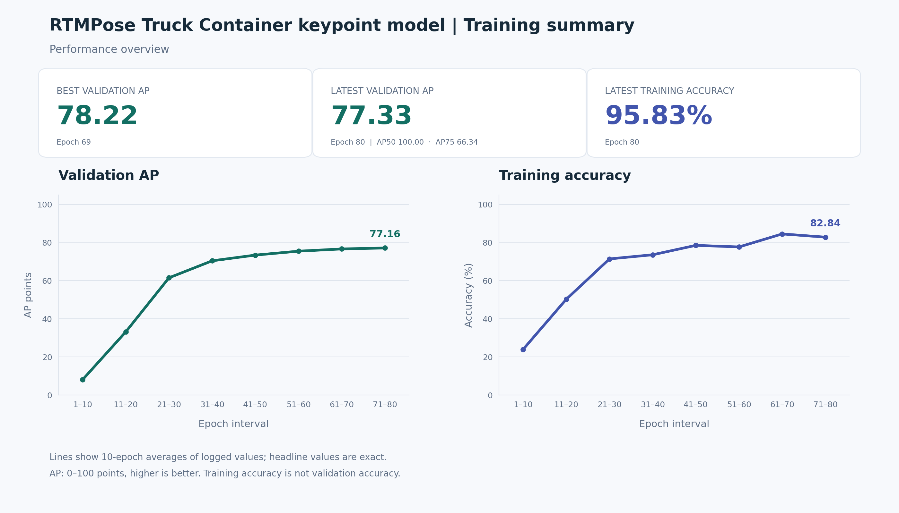

Computer vision · Synthetic-to-real learning
Truck Container Keypoint Detection
Adapting RTMPose from synthetic training data to real truck images.
Synthetic image
Place one rendered truck-container training example here.

Real-image prediction
Place a real truck photo with the model’s predicted keypoints here.

I adapted RTMPose to estimate eight truck-container corner keypoints, combining synthetic-data training with real-image fine-tuning for warehouse parking-support applications.
78.22Best validation AP · 0–100 points
View results
Place the English performance chart here.
It will be shown at full width without cropping.

Best validation AP: 78.22 at epoch 69. Curves show 10-epoch averages; headline metrics use the original logged values. Training accuracy is separate from validation performance.